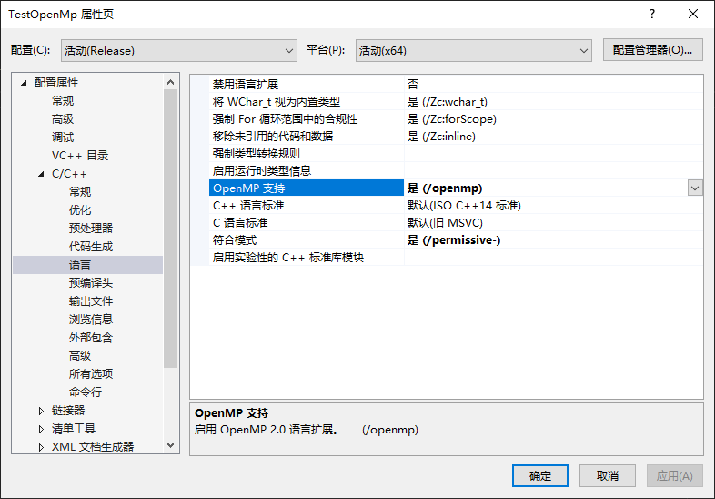
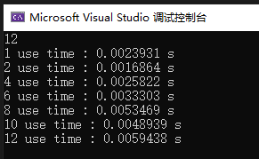

前言
一转眼 2023 年已经过了 3 个月了，博客不知不觉又搁置了不少时间，唉，还是需要持之以恒啊。
并行
为啥想起来搞这个，是因为有业务需要在没有显卡的主机上做加速，在对原代码做逻辑梳理之后，包括通过空间换时间的方式，实在是没有其他可以有显著提升的地方了，就考虑 cpu 并行计算。
因为工程是用的 c++写的，所以也就看了下 c++相关的，一看原来就打开个OpenMp就开启了多处理器，直接来看咋搞吧。
工程配置
新建 c++控制台工程，这个就不需要演示了，我们打开工程属性设置，选择C/C++ =》 语言 =》 OpenMp 支持，选择是（没有汉化的就找对应单词吧，像什么 Language 啊 OpenMp 啊选 Yes 之类的）。

常用命令
| 指令 | 说明 | 示例 |
|---|
| parallel | 紧跟的代码片段会被并行执行 | #pragma omp parallel |
| parallel for | 直接跟 for 循环即可，不需要代码片段 | #pragma omp parallel for |
| 函数 | 说明 |
|---|
| omp_get_num_procs | 获取可并行的处理器个数 |
| omp_set_num_threads | 设置并行处理器个数，对应有个 get 函数 |
| omp_get_thread_num | 在并行代码中获取当前执行的处理器编号 |
| omp_get_wtime | 计时用的 |
测试
接下来我们先来引入头文件，然后测试下看看自己电脑是几个逻辑处理器（不是看内核啊这里）。
1
2
3
4
5
6
7
| #include <iostream>
#include "omp.h"
int main()
{
std::cout << omp_get_num_procs() << std::endl;
}
|
omp.h：这个就是 OpenMp 的头文件。
omp_get_num_procs：获取处理器个数。
如果不出意外的，就能正常输出结果，当然可能也有意外啊，这个自行解决吧，毕竟这玩意儿都是自带的，没啥特殊操作（可能是我这比较顺，有问题的可以交流）。
之后我们也来简单执行个函数测试下，在刚才那句紧跟着写上。
1
2
3
4
| #pragma omp parallel
{
std::cout << "Hello World! " << omp_get_thread_num() << std::endl;
}
|
#pragma omp parallel：没错，这个就是代表这里用多处理执行，一般可以直接跟上单行函数或者 for 循环
omp_get_thread_num：处理器索引，可以理解成线程 id
这个就是开启默认个（一般是满）处理器来执行，可以通过设置处理器个数来修改。
1
2
3
4
5
| omp_set_num_threads(4);
#pragma omp parallel
{
std::cout << "Hello World! " << omp_get_thread_num() << std::endl;
}
|
图像处理
前面那些测试只是为了知道这玩意儿咋用，接下来拿个示例来看下实际的效果。
这里我们假设一个需求，处理一张图（三通道）中某个通道值大于 100 的，并且做对应处理。
这里考虑并行处理，就按照列数/处理器个数来模拟处理图像。
1
2
3
4
5
6
7
8
9
10
11
12
13
14
15
16
17
18
19
| void testImage(cv::Mat& img, int index)
{
std::cout << "index = " << index << std::endl;
int col_begin = IMAGE_COLS / 12 * index;
int col_end = IMAGE_COLS / 12 * (index + 1) - 1;
for (int i = 0; i < IMAGE_ROWS; i++)
{
for (int j = col_begin; j < col_end; j++)
{
if (img.at<cv::Vec3b>(i, j)[0] > 100)
{
img.at<cv::Vec3b>(i, j)[0] -= 100;
img.at<cv::Vec3b>(i, j)[1] += 100;
}
}
}
}
|
然后我们来调用这个函数来对应测试下时间。
1
2
3
4
5
6
7
8
9
10
11
12
13
14
15
16
17
18
19
20
21
22
23
24
25
26
27
28
| cv::Mat img = cv::imread("0.jpg");
if (!img.empty())
{
cv::Mat img_single = img.clone();
double t1 = omp_get_wtime();
int total = omp_get_num_procs();
for (int i = 0; i < total; i++)
{
testImage(img_single, i);
}
double t2 = omp_get_wtime();
std::cout << "1 use time : " << t2 - t1 << " s" << std::endl;
cv::imwrite("0_single.jpg", img_single);
for (int i = 2; i <= 12; i += 2)
{
cv::Mat image = img.clone();
omp_set_num_threads(i);
t1 = omp_get_wtime();
#pragma omp parallel
{
testImage(image, omp_get_thread_num(), i);
}
t2 = omp_get_wtime();
std::cout << i << " use time : " << t2 - t1 << " s" << std::endl;
cv::imwrite("0_" + std::to_string(i) + ".jpg", image);
}
}
|
看下执行效果吧。

通过这个结果，可能跟我写的示例有关，2 个处理器操作速度是最快，我起初以为是开的越多越快，也可能是还没摸透，后续鼓捣的时候有变动的话，就继续更新吧。
小结
并行之路，道阻且长啊，还有 gpu 的并行计算，这都是提速的方式，也都是吃硬件的时候了。